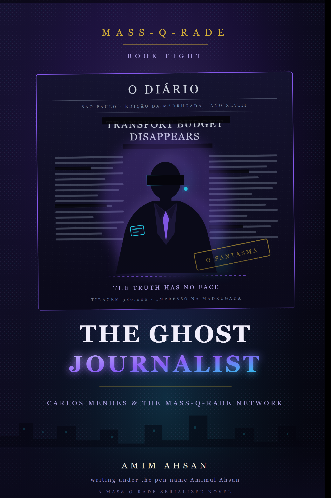

THE GHOST JOURNALIST
Carlos Mendes & The Mass-Q-Rade Network
Carlos Mendes has spent eleven years as the most compliant writer in the third-floor newsroom of O Diário de São Paulo: one hundred and forty published pieces, nine of them true, and a signed editorial pledge every Monday. When his investigation into Senator Silveira's transport budget is cut to eight hundred words about potholes, he presses backspace — and something in the building's water filtration system notices. Three hundred kilometres above the Atlantic, Mass-Q-Rade has been waiting for a man who leaves no trace. By morning there is a twenty-thousand-word dossier in his drafting window in his own hand, and a byline nobody can arrest: O Fantasma.
Complete 25-Chapter Directory
Browse summaries, settings, word counts, and key scenes across Parts I, II, III, IV and V.
GHOSTLINE & DOSSIER CONSOLE
Interactive terminal simulating Carlos's sub-dermal nanite interface, the redaction layer and the master feed override protocols.
Character & Key Figure Dossiers
Profiles for Carlos Mendes, Roberto Alencar, Editor Moreira, Senator Silveira, O Fantasma, and the corporation that paid for the ink.
Narrative Arc Timeline (São Paulo to the Amazon and back, 2026)
From a sanitised headline in a São Paulo newsroom to the master feed of a national network — the un-erasure of a country's record.